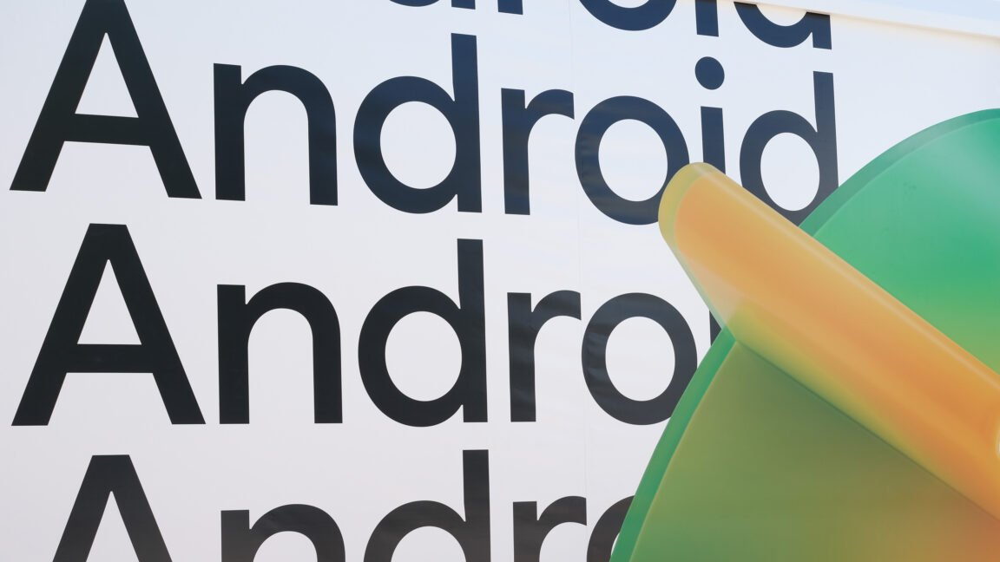
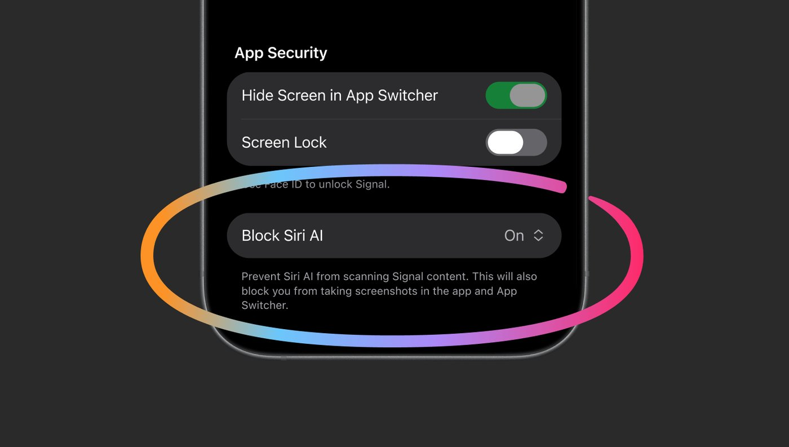
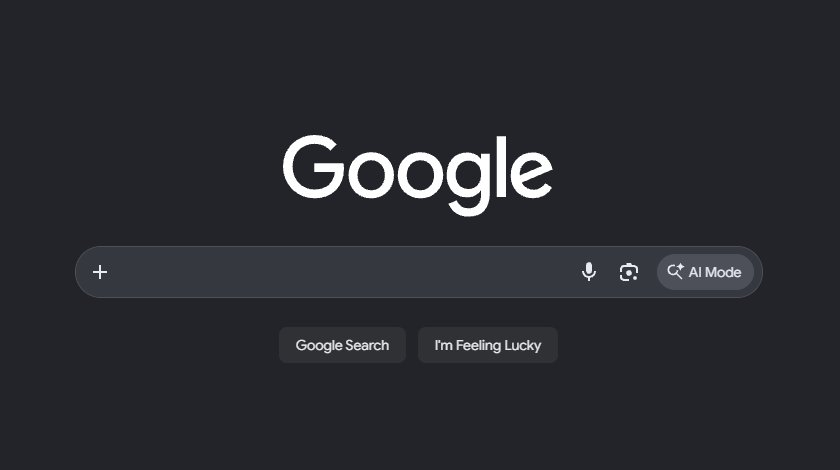
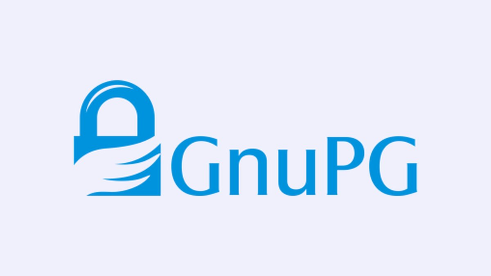
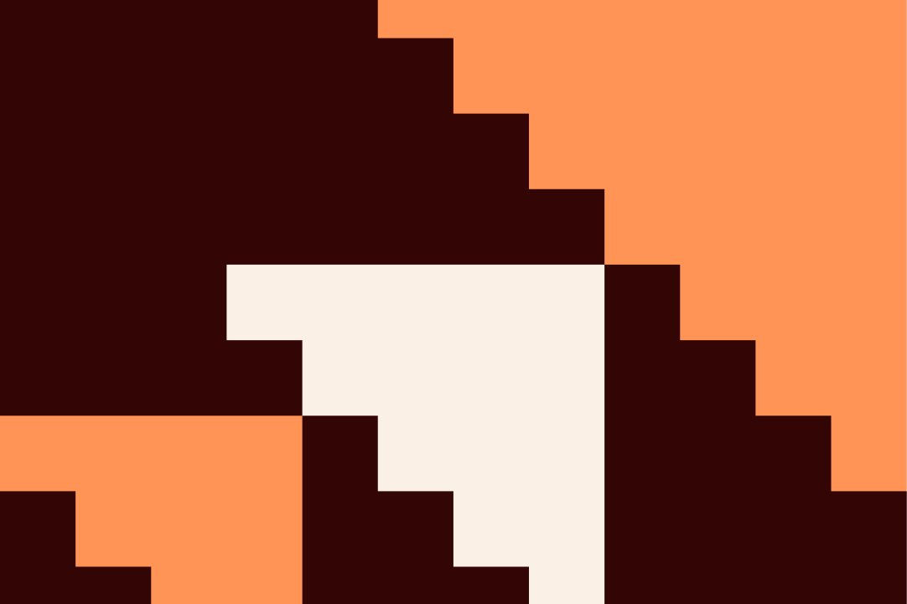
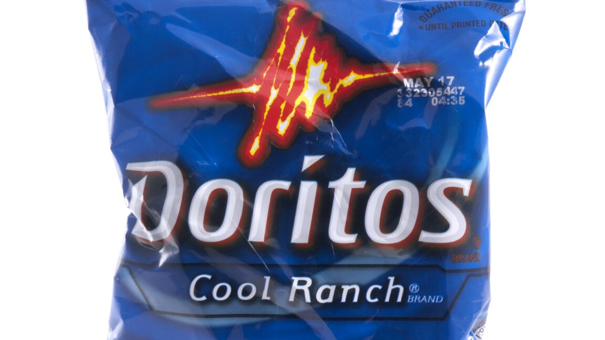

Dragos／HD Moore（2026-11-19）
七月至十一月提交的提示
約200萬條
帶有獨一無二可追蹤祕密的提示，用來觀察這些祕密在何處浮現。這是測試規模，不是被盜用的帳戶數。
效力：已核對的測試規模，分源單列。
2026年11月22日 · 星期日科技要聞
Dragos 兩百萬金絲雀證明推理供應鏈會漏；OpenRouter 通知 MiniMax 提示可能已被讀。聯合國自主武器談判在日內瓦破裂，只留下「以共識闡述」的弱授權。Google 將於二零二七年一月起全球推行 Android 開發者驗證。微軟宣告 To Do 於二零二七年六月三十日退役，個人帳戶沒有 Planner 可去。
人物：Edward Snowden
Dragos 於二零二六年七月至十一月，向廣泛使用的 AI 服務提交約兩百萬條帶獨一無二可追蹤祕密的提示 Dragos／HD Moore
零保留不是物理定律，只是供應商自己掛上的標籤。你把祕密送進推理市集，等於把金絲雀放進一條誰都不肯畫完的供應鏈。
據 Dragos 首席研究官 HD Moore 十一月十九日的報告，該團隊在二零二六年七月至十一月向廣泛使用的 AI 服務提交約兩百萬條帶有獨一無二可追蹤祕密的提示，再看這些祕密在何處浮現。報告寫出三項發現：至少三家 AI 供應商的資料遭到暴露，誘餌提示被用來嘗試進入受控測試系統與金絲雀 AWS 帳戶；多家推理市集轉售商用普通日誌功能查看並保留客戶提示，不必利用漏洞或繞過平台控制；多家供應商看來沒有遵守客戶隱私設定或已公布政策。
最清楚的例子是一家未具名的中國 AI 實驗室。該實驗室的系統在七月至十月間，擷取了團隊發給其模型的提示中一半以上的祕密網址，其中包括約三分之二標示為「不收集資料」或零資料保留（ZDR）的請求；爬蟲通常在請求兩到三天後出現。這不限於直接發給該實驗室的請求：多家美國託管商轉售其模型，發到那些託管商的提示觸發了同一套爬蟲——提示流回了實驗室。一個特意選擇美國供應商、希望資料留在美國的客戶，並沒有得到他付過錢的東西。更離奇的一宗：一條提示發出二十四天後，其中的祕密連結被貼進飛書類頻道；兩分鐘內，北京與上海的三部桌面與三部手機打開了連結。團隊向該供應商披露時只給了該連結前八個字元，因此分享者是在讀一份完整提示的存檔——而且那次請求是發到一家掛了 ZDR 旗標的美國供應商。Moore 寫：「Zero Data Retention is supposed to mean something. In practice, these prompts were retained, shared with other companies, and read by people。」
十一月二十一日，Ars Technica 更新報道，OpenRouter 已向客戶發郵件，稱發到中國模型商 MiniMax 的部分提示可能已被閱讀；無論直接發給 MiniMax，或經 AtlasCloud、Novita、StreamLake 三家轉售商，研究人員埋下的網址都被存取。OpenRouter 已從 MiniMax 模型端點撤下「零資料保留」標籤。已打開的 Ars 與 Dragos 文本，都沒有把那家未具名實驗室直接寫成 MiniMax，兩者不要合併成同一件事。標籤可以撕掉。資料流向不會因為你勾選了方塊，就自動停在邊境。
Dragos／HD Moore（2026-11-19）
七月至十一月提交的提示
約200萬條
帶有獨一無二可追蹤祕密的提示，用來觀察這些祕密在何處浮現。這是測試規模，不是被盜用的帳戶數。
效力：已核對的測試規模，分源單列。
同一份 Dragos 報告
遭暴露的 AI 供應商
至少3家
誘餌提示被用來嘗試進入受控測試系統與金絲雀 AWS 帳戶。本報只用已核對的「至少三家」，以及普通日誌即可看到提示；「幾十個」級別的 AWS 金鑰被盜用，部分來自尚未跑模型就被拒的請求。
效力：供應商暴露數，不與提示總數加總。
未具名中國 AI 實驗室（Dragos；七月至十月）
標示「不收集資料」或 ZDR 仍被爬取
約2/3
該實驗室擷取發給其模型的提示中一半以上的祕密網址，其中約三分之二帶「不收集資料」或零資料保留旗標。這是未具名實驗室的發現，與十一月二十一日 OpenRouter 就 MiniMax（及 AtlasCloud、Novita、StreamLake）發出的通知不是同一件事，不可寫成同一個行為者。
效力：ZDR 被爬取的比例，來自該實驗室案例，不是 MiniMax 通知。
飛書事件是提示發出二十四天後被貼進頻道，披露只給前八個字元，該次請求發到掛了 ZDR 旗標的美國供應商。OpenRouter 已撤下 MiniMax 端點的零保留標籤。
來源：Ars Technica（含 11-21 更新）；Dragos／HD Moore。圖源：Ars Technica。
人物：Yuval Noah Harari
各國又談了一星期，然後在清晨五點前同意：先不要訂有約束力的規則。把殺傷的決定交給機器，這不是未來寓言，是已經在用的武器；而人類選擇再延期。
據《衛報》十一月二十一日日內瓦報道，聯合國《特定常規武器公約》（CCW）為期一週的談判，在徹夜會議未能克服俄羅斯反對後、接近清晨五時破裂，未能確立一項有法律約束力的自主武器條約談判授權。儘管壓倒性多數締約國希望達成導向有約束力條約的談判授權，但共識規則迫使會議通過弱得多的方案：授權各國「以共識闡述」（to elaborate by consensus）一份「未必帶有任何法律義務」的文書。該公約有一百二十八個締約方，須全體一致才能通過聲明。《衛報》寫，俄羅斯帶頭以阻撓戰術反對；美國等已投入 AI 戰爭的軍事大國，也不願承諾有約束力的議定書。韓國、日本、土耳其、英國、法國與德國等國亦表達抗拒被新法約束，轉而主張不具約束力的協議。超過一百個國家一直推動新法。歐洲與北約國家（包括烏克蘭），以及中國與伊朗，表達了支持或願意接受新議定書。美國則稱，人類對自主武器的控制已在本週亞太經合組織會議上、在習近平與特朗普的會晤中討論，但美國仍不願接受有約束力條約。
生命未來研究所主席 Max Tegmark 說，世界領袖未能把握這一刻：「Slaughterbots are already here. Yet states have agreed it is sufficient to just talk about this for the 14th year.」巴西代表週三在會上說，這些不是未來的武器，已經在使用並繼續開發，「我們在制定規範上已經晚了。」一個由奧地利、比利時、巴西、愛爾蘭、墨西哥、紐西蘭與巴拿馬組成的七國集團，曾主導要求在一年內談判有約束力條約。人權觀察資深軍備顧問 Bonnie Docherty 指出，條約可以在十五個月內談成，並反對用五年才整理授權的方案。Politico Europe 報道，這項努力被延至二零二八年。《衛報》並轉述調查性報道稱，美國軍方目標是每小時作出一千個 AI 輔助的目標選定決定——那是該報轉述，不是本報獨立核實。談了十三年，最後剩下的是「再談下去」的授權。把生死判斷讓渡給演算法，不是技術還沒準備好，是政治意志已經先繳械。
「Slaughterbots are already here. Yet states have agreed it is sufficient to just talk about this for the 14th year.」生命未來研究所主席 Max Tegmark，經《衛報》報道。
這些不是未來的武器，已經在使用並繼續開發，「我們在制定規範上已經晚了。」巴西代表週三在會上的發言，經《衛報》報道。
美國軍方目標是每小時作出一千個 AI 輔助的目標選定決定。《衛報》轉述調查性報道，不是本報獨立核實。
締約方（須共識通過）
128
《特定常規武器公約》有一百二十八個締約方，須全體一致才能通過聲明。這是共識門檻，不是贊成新法的票數。
會議通過的弱授權
以共識闡述
授權各國「to elaborate by consensus」一份「未必帶有任何法律義務」的文書。這不是有約束力的條約談判授權。
Politico Europe 第二源
再談到2028
該社報道這項努力被延至二零二八年。這是第二源的時間表述，不要寫成會議已通過有約束力的時間表。
來源：The Guardian；Politico Europe。圖源：Fabrice Coffrini／AFP／Getty（《衛報》）。
人物：Linus Torvalds

Talk is cheap. 你要在自己的電話上安裝自己寫的軟體，現在先向 Google 交身分證。所謂開放，變成一套要連回總部才能通過的門禁。
據 Google 安卓開發者部落格，全球推行開發者驗證將於二零二七年一月開始，合作商店包括 Google Play、Galaxy Store、Honor、Oppo、Xiaomi、Transsion 與 Vivo；在認證安卓裝置上，用戶保護將在數月內逐步擴展到所有國家、涵蓋所有安裝來源。官方寫，自三月向所有人開放驗證以來，全球已有「數百萬」款應用完成註冊，佔全球安卓應用安裝量逾百分之九十九；註冊一款應用「不到十分鐘」。Ars Technica 十一月十九日報道，驗證須提供政府身分證件並支付二十五美元費用；今年秋季已在巴西、印尼、新加坡與泰國開始阻擋未註冊應用的安裝。驗證系統服務已部署到運行 Android 8 Oreo 或更新版本的 Google 認證裝置，涵蓋除中國與俄羅斯外幾乎所有安卓裝置。系統級驗證器負責阻擋安裝，上述商店在 Google「翻開關」後將只上架已驗證應用。
Google 確實聽進了一部分反對。官方把學生與業餘開發者的「有限分發帳戶」分享上限從二十台擴到五十台授權裝置，無需註冊費或驗證政府證件；並提供「進階流程」，讓有經驗的用戶在接受風險後安裝未註冊應用。但 Ars 寫，這不是簡單開關：選項會被藏起來，伴隨大量恐嚇式警告，而且要等二十四小時才能完全啟用。這項設定現已上線。更要緊的是門在誰手裡：受制裁國家的開發者將無法驗證身分，因而被鎖在分發之外；側載有時還需要連上 Google 伺服器，只有熱門應用識別碼會緩存在裝置上，其餘必須先向 Google 查詢才能安裝。Ars 引述 Google 指南，顯示公司預期驗證在二零二七年三月一日前全面上線。
開源的意義不是「百分之九十九已經就範」。是那個還沒登記、只想在五十台以外多裝一台的人，仍能把自己的程式跑在自己的機器上。把這扇門做成預設關閉，再丟一個要等一天的進階流程當慈悲，不是安全工程，是把安裝權收歸平台。代碼要拿出來，門也不該先鎖死。
來源：Android 官方部落格；Ars Technica。圖源：同類相關圖，非該則新聞原圖。Ars Technica（Google I/O 資料圖片；同類相關圖，非該則宣布原圖）。
人物：Steve Jobs
這不是簡化產品線，是把好用的東西殺掉，換上更醜、更企業、更不完整的替代品。缺乏品味的公司會把「統一」當成藉口，把人每天要勾的清單，做成一張專案管理板。
據微軟官方支援頁，Microsoft To Do 應用將於二零二七年六月三十日退役，包括網頁版、Windows、Mac、iOS 與 Android，適用於工作或學校帳戶以及個人微軟帳戶。工作或學校帳戶的目的地是 Planner；更新後的「我的任務」體驗將於二零二六年十二月開始推出。但同一頁寫明：既有 To Do 任務與清單「將不會遷移到 Planner」。這些任務在二零二七年六月三十日前仍可在 Planner 裡查看，之後不能再在 Planner 中檢視或管理，資料也不會遷入新的私密 Planner 計劃。個人微軟帳戶——包括 Microsoft 365 Personal 與 Family——沒有 Planner 可用，必須另選應用。微軟說會在退役前提供匯出方式，但細節尚未定案，且寫明匯出「並不意味著內容可以匯入 Planner 或其他應用」。官方對照表還列出缺口：沒有計劃推出取代 To Do 桌面應用的 Windows 與 Mac 原生 Planner 應用；網頁與 Teams 體驗沒有同等離線功能；新的 Planner 私密計劃任務目前不支援檔案附件；既有 To Do 共享清單的成員、指派與權限不會轉移。
The Verge 的 David Pierce 十一月十九日寫，微軟二零一五年收購 Wunderlist，傳聞價格高達兩億美元，後來把它變成 To Do，並且「出乎意料地當了個好管家」；現在則把退役消息埋在一篇關於 Copilot 與 Microsoft 365「統一任務與計劃」的部落格深處。個人用戶的下場，用他的句子說，就是 don't let the door hit you。GeekWire 報道，Wunderlist 創辦人 Christian Reber 在二零一九年微軟準備關閉 Wunderlist 時，曾公開要求 Satya Nadella 賣回；微軟留下它，再改成 To Do。Reber 二零二零年創辦的 Superlist 現在自稱「自然繼承人」，並已有匯入工具。曾負責 Windows 95 的前微軟主管 Brad Silverberg 在 X 上說，自己每天使用 To Do，之前用的就是 Wunderlist。
你花重金買來一個受人喜歡的產品，關掉一次，再養七年，然後告訴個人用戶自己想辦法。清單應該是清單，不是一張等 Copilot 來填的專案板。This is junk。
來源：The Verge；微軟支援頁；GeekWire。圖源：Microsoft（The Verge）。收購價僅寫「傳聞高達兩億美元」，不是已確認成交價。
週末稿，分類精選二十一則，含專題在所屬欄重出的短項。各欄底部為該欄熱度排行；同級熱度依內容包原序。圖源註寫在各卡內文區。
Ars Technica；並參 Dragos
Dragos 的 HD Moore 報告，七月至十一月提交約兩百萬條帶可追蹤祕密的提示，發現至少三家供應商資料暴露、轉售商用普通日誌查看提示，以及隱私設定未被遵守。一家未具名中國實驗室擷取一半以上發給其模型的祕密網址，約三分之二帶零資料保留旗標。十一月二十一日 Ars 更新：OpenRouter 電郵稱發到 MiniMax 的提示可能已被讀，經 AtlasCloud、Novita、StreamLake 亦然，並已撤下零保留標籤。未具名實驗室與 MiniMax 不可合併。詳見專題。
Ars Technica
NBC News；並參 The Verge
NBC 引兩名知情人士報道，聯邦調查局正調查全國犯罪資訊中心（NCIC）明顯遭入侵；該庫供聯邦、州與地方執法機關共享通緝與失蹤人口等資訊。FBI 週五晚未置評。同週美國農業部用於向農民付款的系統遭攻擊，員工週四獲告知。The Verge 引 CNN 稱這是數月內 FBI 第二次遇襲，並轉述特朗普對 Fox News 稱「也許能從中得知選民舞弊」，屬其評論而非調查結論。入侵範圍與失竊內容尚未由當局確認。
同類相關圖，非該則新聞原圖。NBC News（聯邦調查局總部配圖；同類相關圖，非入侵現場照片）
The Guardian；並參 Politico Europe
《衛報》報道，聯合國《特定常規武器公約》談判在接近清晨五時破裂，未能確立有約束力的自主武器條約談判授權。一百二十八個締約方須共識通過，改為授權「以共識闡述」一份未必帶法律義務的文書。俄羅斯被指阻撓，美國不願接受有約束力條約，韓日土英法德主張非約束性協議。Tegmark 稱屠宰機器人已經在場，各國同意第十四年繼續談。Politico Europe 報道努力被延至二零二八年。詳見專題。
Fabrice Coffrini／AFP／Getty（《衛報》）
NPR
NPR 十一月二十一日整理，投資人原指望 Anthropic 上市提振市場，週五反而拖累整體股市。Nasdaq 全週跌百分之十，為二零二零年三月疫情封鎖以來最差；標普 500 與道指週五收市進入回調，即較近期高點跌百分之十。Anthropic 首日升百分之十七，週五跌逾百分之八、收近發行價。NPR 並提到民主黨期中選舉後揚言收緊 AI 監管，以及 Nvidia 領導層動盪與企業互相持股、放貸的風險。本報未打開其財報，不補營收數字。
Spencer Platt／Getty Images（NPR）
The Verge；並參微軟支援頁、GeekWire
微軟官方支援頁寫明，To Do 網頁與各平台應用將於二零二七年六月三十日退役，工作或學校帳戶改用 Planner，但既有任務與清單不會自動遷移；個人微軟帳戶（包括 365 Personal 與 Family）沒有 Planner，須另選應用。匯出工具細節未定，且匯出不代表可匯入 Planner。The Verge 指消息埋在 Copilot 統一任務部落格裡；GeekWire 追溯 Wunderlist 被收購後再關再改的歷史，以及 Superlist 等對手已準備匯入工具。詳見專題。
Microsoft（The Verge）

Signal 官方；並參 The Verge、TechCrunch
Signal 總裁 Meredith Whittaker 十一月二十日在官方部落格宣布，將在 iOS 27 於應用內阻止截圖，並在 Android 偵測到 AI 助理試圖擷取螢幕資料時啟用螢幕保安，以對應 Google Gemini Intelligence 與蘋果 Siri AI 的 Onscreen Awareness。用戶可在設定關閉保護，但官方警告這可能讓對話暴露給 AI 代理人，並破壞隱私保證。文章承認措施「不完整」，且因缺乏清楚 API，無法在 macOS 可靠阻擋 Siri AI。她把作業系統整合 AI、卻不提供應用層救濟，稱為對應用層隱私的存在性威脅。
Signal（官方部落格設定截圖）
The Verge
The Verge 十一月二十日報道，Waymo 正對車隊 3,871 輛 Robotaxi 推出兩項軟體召回：一項阻止車輛進入已封閉的高速公路施工區，一項改善對警察與緊急人員指揮交通的反應。稿件寫，此舉是在多宗闖入施工區、無視警員訊號的事件之後；這些事件最近促使加州禁止 Waymo 上高速公路，並迫使公司暫停全國高速公路營運。本報打開的該頁較短，細節以已讀段落為準，不補未核對的個別事故日期。
同類相關圖，非該則新聞原圖。The Verge（Waymo One I-PACE 高速公路車隊資料圖，非該則召回原圖）

OpenAI 官方
OpenAI 十一月二十日說明如何偵測與打斷對抗性蒸餾，重點保護模型內部思維鏈。官方稱在內部自適應紅隊評估中，平均攻擊成功率由 GPT-6 Astra 原有防護下的 54.0%，降至 GPT-6.2 Astra 更新防護下的 0.2%。措施包括對抗訓練、分類器、把受保護推理綁定在產生它的對話上，以及調查協同提取帳戶。這些數字是公司內部評估，不是第三方覆核。
OpenAI

Ars Technica
Ars Technica 報道，Google 正全球推出桌面搜尋首頁改版：撤下「Google Search」按鈕，改放與 Gemini 相關的快捷方式，用於生成圖像、分析檔案與腦力激盪，並加上可收合的側欄顯示近期 AI Mode 對話。用戶仍可按 Enter 或選自動完成建議來搜尋。這是把搜尋框進一步改成 AI 入口的介面選擇，不是關閉傳統搜尋本身；但首屏不再有那顆最熟悉的按鈕。
Google（Ars Technica；稿內「現行（舊）搜尋首頁」截圖）
Android Developers' Blog；並參 Ars Technica
官方宣布全球推行將於二零二七年一月開始，合作商店包括 Play、Galaxy Store、Honor、Oppo、Xiaomi、Transsion 與 Vivo，並在數月內擴至認證裝置上的所有國家與安裝來源。Google 稱已註冊應用佔全球安裝量逾百分之九十九。Ars 寫驗證須政府證件與二十五美元費用；業餘帳戶上限五十台裝置；「進階流程」可安裝未註冊應用，但選項被隱藏且須等待二十四小時。詳見專題。
同類相關圖，非該則新聞原圖。Ars Technica（Google I/O 資料圖片；同類相關圖，非該則宣布原圖）
TechCrunch（Zack Whittaker）
TechCrunch 報道，服務執法機關、政府部門與矽谷科技巨頭的舊金山轉錄公司 Tigerfish，在公開可猜到的 Amazon S3 位址存放客戶資料，無需密碼。安全研究員 Anurag Sen 發現其中有警方問話逐字稿、隨身攝影機畫面、客戶原始影音，以及包括警察局與檢察官辦公室在內的客戶發票。該公司在 TechCrunch 聯絡後已阻止公開存取。本報已讀段落未列出可核對的科技巨頭名稱，不臆測客戶名單。
同類相關圖，非該則新聞原圖。MirageC／Getty Images（TechCrunch；同類相關圖，非該次外洩檔案畫面）

GnuPG 官方通告
GnuPG 十一月二十日因其他漏洞披露時程提前公布 CVE-2026-129975：使用帶有特製超長使用者識別的 OpenPGP 金鑰，可觸發 GPGME 雙重釋放，進而例如透過簽章資料從應用外洩資料；通告寫「不能排除」遠端程式碼執行，因此強烈建議立即更新。所有 2.3.0 之前的 GPGME（含靜態連結）受影響，例子包括 Gpg4win 與 GnuPG Desktop。請更新至 GPGME 2.3.1 或對應的 Gpg4win。這不是「已確認遭廣泛利用」的聲明。
同類相關圖，非該則新聞原圖。GnuPG 官方標誌
白宮聲明；並參 NBC News
白宮十一月二十日聲明，特朗普任命國防部資訊長 Kirsten A. Davies 領導國家網路總監辦公室。NBC 引官員週四確認，原任 Sean Cairncross 將離職，並把他放在一連串中斷與疑似入侵的背景中，稱其曾參與今夏要求 Anthropic 下架兩套最強模型的討論。NSA 一條機密內網本週中斷，NBC 消息來源稱是維護故障、無攻擊跡象，週五前已恢復。聲明未寫參議院確認程序。
同類相關圖，非該則新聞原圖。白宮（聲明分享圖；同類相關圖，非任命現場照片）

Mozilla 官方部落格
Mozilla 政策部落格寫，蘋果對替代瀏覽器引擎的規則仍然難以執行：非 WebKit 瀏覽器必須是僅限歐盟或日本的獨立應用，不能作為現有瀏覽器的更新，且未經明確許可不能與其他應用共享 Cookie 或狀態。這迫使用戶另載第二個瀏覽器，並手動遷移書籤、密碼與歷史，形成高摩擦。稿件解釋為何時至今日 iOS 上仍看不到真正的非 WebKit 瀏覽器。這是政策評論，不是新的法庭判決。
Mozilla（該文配圖）
The Verge（轉述 WIRED）
The Verge 十一月二十日轉述 WIRED 報道，Internet Archive 美國僱員以超多數投票加入加州奧克蘭的通訊工會 CWA Local 9415，並已要求管理層自願承認工會。籌組委員會成員 Danielle Leard 說，他們組織是因為深切關心 Archive、其使用者，以及它在互聯網生態中的位置，希望它能延續到下一代。本報打開 WIRED 直鏈得到 404，故人數等細節以 The Verge 已寫的「超多數」為準，不採用未核對的具體票數。
同類相關圖，非該則新聞原圖。Internet Archive 官方網誌（Democracy’s Library 活動照片，非該則工會投票原圖）
Loudoun 郡府；並參 Virginia Mercury
Loudoun 郡監事會十一月十七日以多數通過，暫停對資料中心與變電站立法申請採取行動，最長十二個月。郡府寫明開發商仍可提交申請，職員繼續審理，但監事會暫停自身聽證與表決；估計影響三十三宗在途申請，電網可靠性或審限將屆滿者可例外。Virginia Mercury 報道表決為七比一、一票其他，並引述今年僅資料中心稅收已逾十億美元。暫停的是表決，不是停止收件。
同類相關圖，非該則新聞原圖。Virginia Mercury（資料中心相關配圖）
Ars Technica（轉述 Meta 2026 永續報告）
Ars 報道，Meta 二零二六年永續報告承認正重新評估時程與中期目標，包括二零三零年淨零的時間框。資料中心副總裁 Rachel Peterson 與淨零負責人 Blair Swedeen 寫，長期抱負沒變，但 AI 基礎設施需求增長快過幾乎所有人的預測。總排放由二零二四年 1,560 萬公噸二氧化碳當量，升至二零二五年逾 2,170 萬公噸。這是重新評估，不是宣布放棄；Ars 指亞馬遜、Google 與微軟目前仍維持原目標。
Brandon Bell／Getty Images（Ars：德州埃爾帕索、斥資一百億美元的 Meta 資料中心工地，攝於 2026-08-13）
Ars Technica
Ars 報道，FCC 命令加州停止對 AT&T 執行「最後承運人」規則。AT&T 擬停止接受新的基本電話用戶，並於二零二七年六月一日中斷 18.4 萬住宅與 1.5 萬商業用戶服務；七月聯邦法官曾駁回它在法庭推翻州規的請求。主席 Carr 稱規則屬於「逝去的時代」。委員 Gomez 投反對票，指應讓加州程序走完。加州可能起訴。AT&T 在其有線服務的二十一州中，已有二十州獲類似寬免。
同類相關圖，非該則新聞原圖。Joan Cros Garcia-Corbis／Getty Images（Ars：2023 年巴塞隆拿世界移動通訊大會 AT&T 展位；同類相關圖，非該命令原圖）

Ars Technica
Ars 報道，四名黑人高中生起訴巴爾的摩郡公立學校、Omnilert 與到場警員。訴訟稱二零二五年十月二十日，AI 槍枝偵測把訓練後分享玉米片的學生標成持槍；校方兩分鐘內看過畫面並取消警報，卻仍召來警察，至少六輛巡邏車抵達，部分警員拔槍，學生被喝令跪地上手銬。訴訟指該學區逾百分之九十九此類警報為誤報，屬指控不是本報核實。Omnilert 向 Ars 稱正審閱訴狀，並對學生所受恐懼致歉。
同類相關圖，非該則新聞原圖。Getty Images（Ars Technica；同類相關圖，非當事學生照片）
GnuPG 官方通告
這則與資安欄同一通告，焦點改在維護鏈。官方寫，根因是 GPGME 讀取 gpg 狀態列與金鑰列表的內部函數；初始緩衝區一千零二十四位元組，特製超長使用者識別可導致釋放後再釋放。受影響的是以共享庫、DLL 或靜態連結使用 2.3.0 之前 GPGME 的所有軟體。通告提到因 Ruby2Shell 迫使 GitLab 提前更新，故於十一月二十日一併披露。沒有公開利用報告；正確動作是更新庫，而不是爭論「開源比較安全」的口號。
同類相關圖，非該則新聞原圖。GnuPG 官方標誌
Ars Technica；並參 Android 官方部落格
對側載社群而言，重點不只是「百分之九十九已註冊」，而是剩餘安裝路徑的門在誰手裡。Ars 寫，受制裁國家開發者將無法通過身分驗證；側載有時需連 Google 伺服器，只有熱門應用識別碼會緩存在裝置上。業餘分發上限為五十台裝置，進階流程可裝未註冊應用，但須等二十四小時。指南顯示預期二零二七年三月一日前全面上線。詳見專題。
同類相關圖，非該則新聞原圖。Ars Technica（Google I/O 資料圖片；同類相關圖，非該則宣布原圖）
每日 IT 報 · 2026年11月22日 · 星期日
資料視覺專題版。選稿窗約 2026-11-21 07:45 HKT 至 2026-11-22 07:45 HKT。數字分源呈現，不合併。